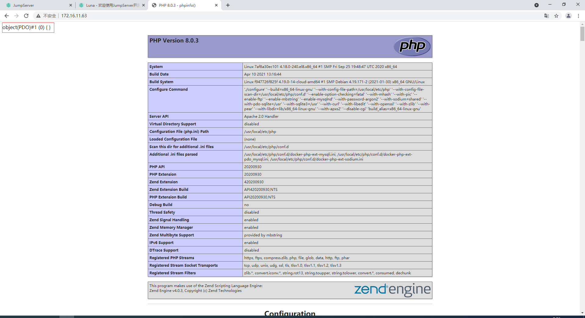
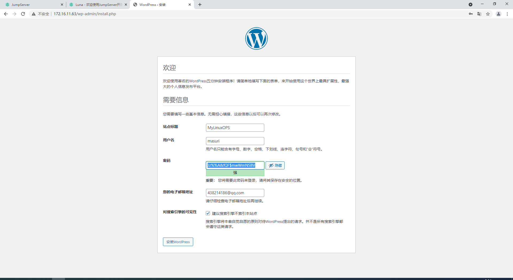
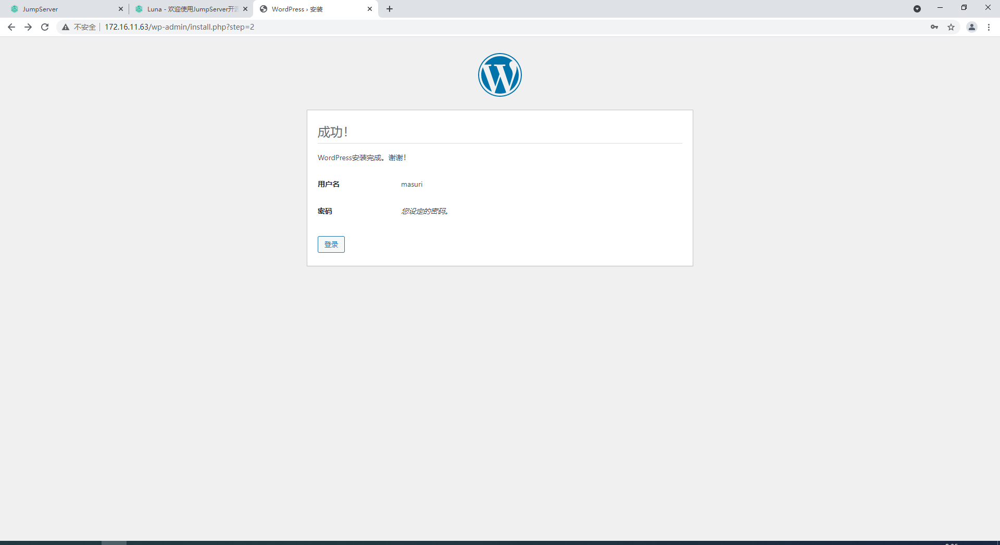
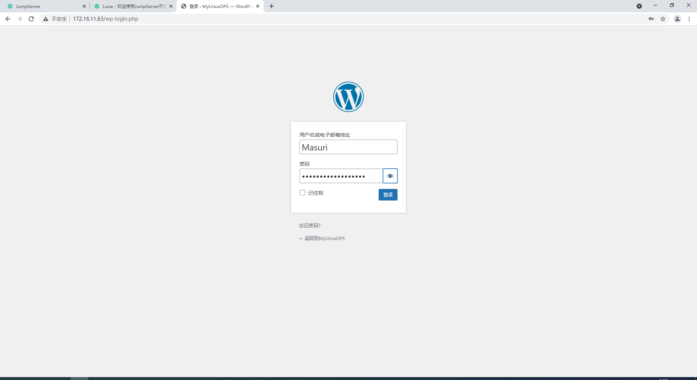
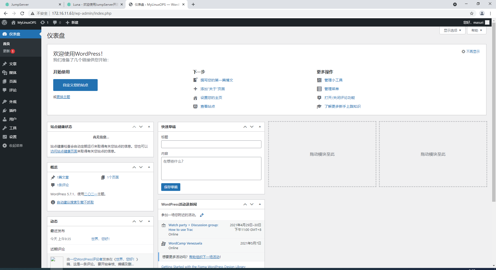

Docker存储卷
Docker在运行时，是基于分层镜像联合挂载机制实现的，而这种分层构建镜像，联合挂载并在最上层实现读写层的时候，所有容器中生成的数据都被最上层的可写层所包含，而这个可写层，本身不属于镜像层属于容器，若是容器删了，可写层也将删除。如果要持久保存，则需要将其做成镜像，若要将其进行分发，则可以将其推送到仓库中。
所以我们不能将数据保存在容器的可写层上，通常可写层上只用来保存临时数据。我们需要容器内用来存放数据的目录与容器外的某个目录建立其关联关系，容器中进程所有写入到此目录内的数据都将保存到宿主机上。因此容器停止或删除后，或者再次创建出容器时，其依旧会与宿主机上的目录相关联，那么数据就不会丢失了。
如果此目录属于网络文件系统中的目录，那么即使宿主机挂了，那么数据依然不会丢失。在其他宿主机上再次创建出相同的容器并挂在，数据依旧可用。这种技术就叫做数据卷（data volume）
数据卷类型
Docker有两种类型的卷，每种类型都在容器中存在一个挂载点，但其在宿主机上的位置有所有不同；
Bind mount volume- 在宿主机上的目录是用户指定的，容器中的目录也是用户指定的。
Docker-managed volue- 容器中的目录是用户指定的，宿主机中的目录是由系统指定的生成在
/var/lib/docker/vfs/dir/<some volume ID>
- 容器中的目录是用户指定的，宿主机中的目录是由系统指定的生成在
Docker管理卷实现
1.创建容器并指定容器内的卷位置
1 | # 使用-v选项，指定容器内的目录，并与宿主机上目录创建关联关系，容器运行时不能带--rm否则一旦退出数据卷也将被销毁，容器停止后再删除容器，其数据卷会被保留。 |
2.查看宿主机上/data目录所关联的位置
1 | [root@CentOS8 ~]# docker volume ls |
3.在宿主机上相关联的位置创建文件
1 | [root@CentOS8 ~]# cd /var/lib/docker/volumes/13c7c5c87970e55e34edfbea16acfec4885d39a439499c276a5b5c5b0efd03b0/_data |
4.进入容器内进行查看
1 | [root@CentOS8 _data]# docker attach mbbox |
绑定挂载卷
1.在宿主机上创建一个目录，并生成文件
1 | [root@CentOS8 ~]# mkdir /data/volume/v1 -p |
2.创建出容器，并指定容器外与容器内对应的目录关系
1 | [root@CentOS8 ~]# docker run --name mbbox -it --rm -v /data/volume/v1:/mydata busybox /bin/sh |
3.容器退出删除后，宿主机上目录内的内容依然存在
1 | [root@CentOS8 ~]# cd /data/volume/v1/ |
多容器间共享数据
1.创建出第一个容器并挂载卷
1 | [root@CentOS8 v1]# docker run --name mbbox --rm -it -v /data/volume/v1:/my/data busybox /bin/sh |
2.创建第二个容器并挂载与第一个容器相同的卷
1 | [root@CentOS8 v1]# docker run --name mbbox1 --rm -it --volumes-from mbbox busybox /bin/sh |
容器化运行wordpress
1.在宿主机上创建出MySQL的数据目录，以及PHP项目的数据目录
1 | [root@CentOS8 /]# mkdir -p /data/volume/{db,html} |
2.创建出php容器并指定项目路径与本地数据目录的对应关系，开放80端口
1 | [root@CentOS8 ~]# docker run --name apache-php -d -v /data/volume/html:/var/www/html -p 80:80 php:apache |
3.官方镜像默认没有安装mysqli和pdo_mysql模块，需要手动安装模块，重启容器。
1 | [root@CentOS8 ~]# docker exec php /usr/local/bin/docker-php-ext-install mysqli pdo_mysql |
4.创建出MySQL容器，指定数据目录与本地数据目录的对应关系。
1 | [root@CentOS8 ~]# docker run --name db -d -v /data/volume/db:/var/lib/mysql -e MYSQL_ROOT_PASSWORD=masuri mysql:latest |
5.查询出php和db容器内的IP
1 | # php容器ip=172.31.0.2 |
6.在db中创建出wordpress的库，以及管理用户
1 | [root@CentOS8 ~]# docker exec db mysql -uroot -pmasuri -e "CREATE DATABASE wordpress;" |
7.测试数据库连接
1 | [root@CentOS8 ~]# vim /data/volume/html/index.php |

8.部署wordpress代码，修改配置文件
1 | [root@CentOS8 ~]# unzip latest-zh_CN.zip |
9.访问页面继续安装



